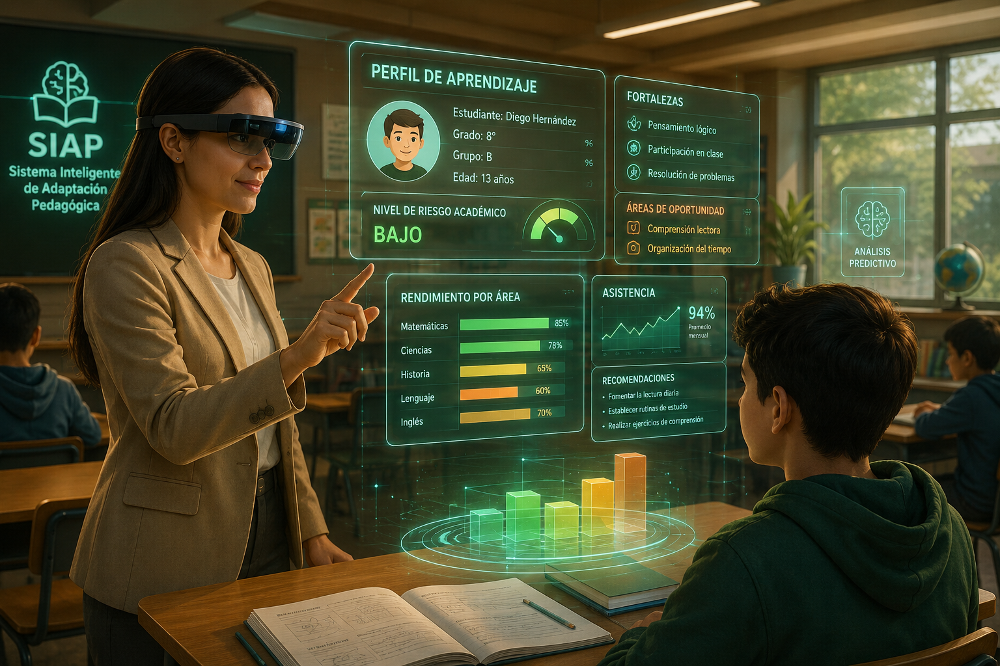

Cada estudiante aprende distinto. SIAP ayuda al docente a responder a tiempo.
SIAP es un Sistema Inteligente de Adaptación Pedagógica: registra a los estudiantes y su perfil de diversidad —auditiva, visual, ritmo de aprendizaje lento o rápido, entre otras— y sugiere al docente adaptaciones curriculares concretas para cada caso.
Un aula, muchas formas de aprender
Los docentes atienden grupos numerosos con necesidades muy distintas, pero rara vez tienen tiempo o herramientas para diseñar una adaptación curricular por estudiante. SIAP traduce esa información dispersa en una recomendación clara.
Diversidad auditiva
Identifica estudiantes que se benefician de subtítulos, apoyo visual o lengua de señas.
Diversidad visual
Detecta necesidad de material ampliado, alto contraste o descripciones auditivas.
Ritmo de aprendizaje
Distingue entre estudiantes que necesitan refuerzo y quienes requieren retos adicionales.

De la matrícula a la recomendación en el aula
Registro del estudiante
El docente o el centro registra al estudiante junto con indicadores de diversidad y desempeño.
Análisis del perfil
El modelo procesa esos indicadores y los compara con patrones de casos previos.
Sugerencia al docente
SIAP entrega una recomendación de adaptación curricular lista para aplicar en clase.
Metodología CRISP-DM aplicada a SIAP
El proyecto sigue las seis fases estándar de un proyecto de ciencia de datos, adaptadas al contexto educativo.
-
01
Comprensión del negocio educativo
Se define el problema: docentes sin tiempo ni herramientas para adaptar el currículo a la diversidad del aula, y el objetivo de SIAP como sistema de apoyo a la decisión.
Business Understanding -
02
Comprensión de los datos
Se identifican las variables relevantes del estudiante: necesidades auditivas, visuales, ritmo de aprendizaje, historial de desempeño y observaciones del docente.
Data Understanding -
03
Preparación de los datos
Limpieza, codificación de variables categóricas y balanceo de clases antes de entrenar el modelo de recomendación.
Data Preparation -
04
Modelado
Entrenamiento del modelo que clasifica el perfil del estudiante y sugiere el tipo de adaptación curricular más adecuado, documentado en el notebook del proyecto.
Modeling -
05
Evaluación
Se valida el desempeño del modelo con métricas de clasificación y revisión pedagógica de las sugerencias generadas.
Evaluation -
06
Despliegue
El modelo se expone al docente a través de una app en Streamlit, con el código y la documentación publicados en GitHub.
Deployment
Con qué está construido SIAP
Pruébalo desde la perspectiva del docente
La demo en Streamlit permite ingresar el perfil de un estudiante y ver, en segundos, la adaptación curricular que SIAP sugiere.